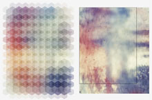

Design. Create. Play.
(cc)2011 Shanfan Huang

Disclaimer: This webpage is not tested in IE.
Hexagonal Grid Generator
This script generates a hexagonal grid then fills the color from an underlying rasterized image, like this:
To run the script, you'll need to install the Adobe Illustrator scripting plugin Scriptographer. My script and its user instruction can be found here.
* The blurry photo I used as the color reference is from Yunyunsarang Deviantart.